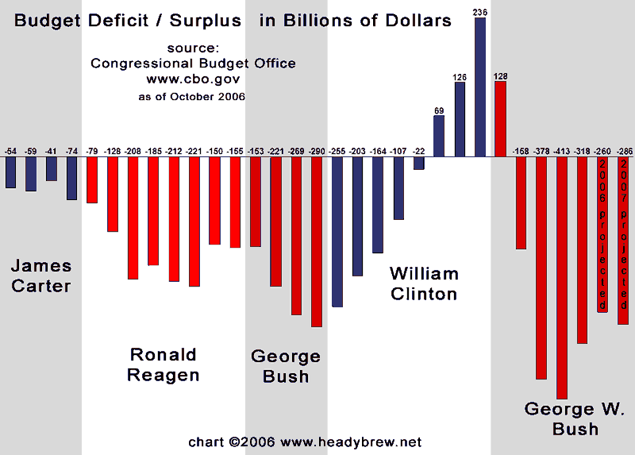

No vote.
Poll: Who would you vote for? (54 votes)
| Obama/Biden | 28 |
| McCain/Palin | 6 |
| Nader | 0 |
| Kablizzy - WTF? | 17 |
| Other | 3 |
I vote for Kablizzy, hands down.
What I said last time this topic came around -definitely- still stands, if not more so.
Obama/Biden.
Obama/Biden.
Obama gets my vote. If I was an American he'd clearly win the election!
Blizzy for Pres!
(I was trying to find the old blizzy for pres graphs and stuff, but forum search fails)
(I was trying to find the old blizzy for pres graphs and stuff, but forum search fails)
I miss the option of 'Who cares?'. .;
I miss the option of 'Who cares?'. .;
Your apathy would doom us all.
Obama/Biden. I think that's a given.
I miss the option of 'Who cares?'. .;
There it is.
I miss the option of 'Who cares?'. .;
Well pointed out, Strife.
Anyway, Kablizzy. Then Obama.
GO KABLIZZY 
Kablizzy, no doubt ")
Bilzz gets my vote for the tie with Obama!
I don't think Nader is even running..
I don't understand why Kablizzy is even on this poll... he's gone. That joke is old. It's not funny anymore.
Obama/Biden for me.
Also, Strife, here's the actual "Who Cares" option:
Obama/Biden for me.
Also, Strife, here's the actual "Who Cares" option:
I'm not 100% sure I'd vote if I could, but I'd probably end up voting for Obama/Biden in this election.
I've heard Biden has a plan to monitor P2P programs and filesharing sites, and sue anyone who's violated copywrite laws.
I'm for McCain.
I'm for McCain.
I've heard Biden has a plan to monitor P2P programs and filesharing sites, and sue anyone who's violated copywrite laws.
I'm for McCain.
You're going to base your support for a presidential candidate based on who is more likely to let you get away with music piracy?
Seriously?
No vote. I'm not a big fan of either of them. 
Yes. I know, this is why people my age can't vote.I've heard Biden has a plan to monitor P2P programs and filesharing sites, and sue anyone who's violated copywrite laws.You're going to base your support for a presidential candidate based on who is more likely to let you get away with music piracy?
I'm for McCain.
Seriously?
Warned. Don't admit to criminal acts on the forums, please.
-Atilla
I dunno, Mrs. Palin is a pretty good looking politician. Plus, have you seen her daughter?
Seriously though, I haven't been following this election except through my very liberal and very politically "aware" friend. So we have what, a black dude and a dinosaur running for president?
Seriously though, I haven't been following this election except through my very liberal and very politically "aware" friend. So we have what, a black dude and a dinosaur running for president?
wow...putting blizz in there is a pretty much guarenteed way to skew the results...either be serious or not...don't try to do both.
(I vote Obama)
(I vote Obama)
I've heard Biden has a plan to monitor P2P programs and filesharing sites, and sue anyone who's violated copywrite laws.
I'm for McCain.
I don't think it'd be possible to police the number of people who do so. And what if the file in question was posted on the internet outside of the US? How would he be able to police something like that?
I don't think it's a big deal, personally. Net Neutrality is something to be worried about IMO.
And besides, if one site gets shut down another one will be made. That's how things work. If there's enough of a demand someone will create a supply.
Kablizzy should form his own party, but since i don't live in the usa, i can't vote.
Leeroy Jenkins for prez!
FOR THE HORDE!
FOR THE HORDE!
I honestly don't know if I'll vote this election. Both main candidates suck, in my opinion. I guess it comes down to who'll suck the least. But for now, Kablizzy wins.
Kablizzy should form his own party, but since i don't live in the usa, i can't vote.That, and you're 13.
Qwerty Jones believes in change. Qwerty Jones believes in Obama.
If the fate of the US didn't hang in the balance, this would be one hilarious election. Both of the big candidates are absolutely ridiculous. Between both of them and their running mates, only one has ANY executive experience... and she's a batshit insane neocon.
John McCain is being painted as a maverick by his own party mates, who don't realize that they're calling themselves idiots when they praise him for disagreeing with them. Of course, if he really did disagree with them as much as they let on they certainly wouldn't endorse him. He's unlikely to deviate from Bush's policies, since he's voted for them at least nine times out of ten.
Obama is being blindly followed by hordes of people who know nothing about him; even those who claim to "know" him well don't, because he has a next to nonexistent reputation, and there's not much of anything to know. Over 100 times while in the Illinois Senate, He avoided difficult issues by voting present instead of taking a position for or against. Considering this history of sidestepping tough decisions, and the failure to define his platform well ("Change" is pretty vague), can we really expect he'd bring about any sort of significant beneficial improvement to the office of president?
Palin, McCain's VP pick, has a similarly thin record. But in the short time she's been governor of Alaska, she's put herself behind every position that defines a neocon. She's against abortion for rape victims. She's opposed to gay marriage. Her only solid opinion on our energy policy is that we should drill more so we can put off actually fixing the problem until she's far enough away to not take blame (she's in her forties now, so she may live to see oil run out, but she can reasonably expect her political career to end first). But she's called a 'maverick' as well, all but proving republicans have zero understanding of what the term is supposed to mean.
Joe Biden, the one person involved in this race who I believe is relatively sane, is being largely ignored by the spin doctors, for reasons that truly elude me.
In short, this race is pretty much a joke, and the lack of anything worth voting for feels almost as disenfranchising as the outright fraud in both of the elections that Bush won.
John McCain is being painted as a maverick by his own party mates, who don't realize that they're calling themselves idiots when they praise him for disagreeing with them. Of course, if he really did disagree with them as much as they let on they certainly wouldn't endorse him. He's unlikely to deviate from Bush's policies, since he's voted for them at least nine times out of ten.
Obama is being blindly followed by hordes of people who know nothing about him; even those who claim to "know" him well don't, because he has a next to nonexistent reputation, and there's not much of anything to know. Over 100 times while in the Illinois Senate, He avoided difficult issues by voting present instead of taking a position for or against. Considering this history of sidestepping tough decisions, and the failure to define his platform well ("Change" is pretty vague), can we really expect he'd bring about any sort of significant beneficial improvement to the office of president?
Palin, McCain's VP pick, has a similarly thin record. But in the short time she's been governor of Alaska, she's put herself behind every position that defines a neocon. She's against abortion for rape victims. She's opposed to gay marriage. Her only solid opinion on our energy policy is that we should drill more so we can put off actually fixing the problem until she's far enough away to not take blame (she's in her forties now, so she may live to see oil run out, but she can reasonably expect her political career to end first). But she's called a 'maverick' as well, all but proving republicans have zero understanding of what the term is supposed to mean.
Joe Biden, the one person involved in this race who I believe is relatively sane, is being largely ignored by the spin doctors, for reasons that truly elude me.
In short, this race is pretty much a joke, and the lack of anything worth voting for feels almost as disenfranchising as the outright fraud in both of the elections that Bush won.
Considering this history of sidestepping tough decisions, and the failure to define his platform well ("Change" is pretty vague), can we really expect he'd bring about any sort of significant beneficial improvement to the office of president?
http://www.barackobama.com/issues/
I'm dumb.
^Huh?

Blue_Tetris is spamming!
Um... no.
That was black_tetris.
Also, it's clear you new guys don't remember the old memes.
That was black_tetris.
Also, it's clear you new guys don't remember the old memes.
Fine, pictures will not be replaced. If you care about such silliness-which happens once in a blue moon, mind you-enough to want to ruin the fun, you should go back to posting on Newgrounds or Gaia, and trying to get your devianTart viewcount up.
Also,
Also,
I agree with Strife, moreover, there's always this.QuoteThe only thing I know about Obama is what I heard him say during his acceptance of his nomination, and in that he provided a very long list of things he meant by "change." What he didn't have time to say in the speech is pretty clearly presented on his website.
And that's enough!
failure to define his platform well ("Change" is pretty vague)I'm typically pretty politically apathetic.
My political stance is pretty much defined by this diagram:

The only thing I know about Obama is what I heard him say during his acceptance of his nomination, and in that he provided a very long list of things he meant by "change." What he didn't have time to say in the speech is pretty clearly presented on his website.
In brief, the fact that someone so indifferent and unenthusiastic about politics as I am makes the effort to make a post to point out how far out of the way you'd have to go not to know what Obama means by "change" doesn't reflect terribly well on you.
I'd like to point out the fact that George Bush basically used the most money the year the Iraq War started - he apparently was so bent on getting Hussein that he was willing to lose 413,000,000,000 dollars in one year.
In brief, the fact that someone so indifferent and unenthusiastic about politics as I am makes the effort to make a post to point out how far out of the way you'd have to go not to know what Obama means by "change" doesn't reflect terribly well on you.Well said. I completely agree.
Thanks for that chart, too.
kablizzy, no contest.
McCain.
---VADER---
-------------------
SKYWALKER
'nuff said
The only thing I know about Obama is what I heard him say during his acceptance of his nomination, and in that he provided a very long list of things he meant by "change." What he didn't have time to say in the speech is pretty clearly presented on his website.It's nice that he's made a great laundry list of thing's he'll change, but there's also the matter of how he plans to change things. Change can be quite varied even in the scope of a single issue, and very subjective also. And while he does make many of his positions known, there are still many issues that he refuses to take a side on. Apathy of political matters is perfectly acceptable of the average citizen (I don't expect you to keep up with the circus our politic has become), and is even an option to legislators, who don't have to vote on every bill or amendment. But as president, which is by contrast a very executive position, Barack wouldn't be allowed any sort of cop-out. Here, Obama would come face-to-face with many issues he's dodged in the past, the most prominent of which is gun control. It's a very real possibility that over the next presidential term a Supreme Court justice may resign, die, or otherwise need to be replaced. The court is now divided on whether an individual has the right to own a firearm, so the next position on the court to be swapped out could very well play a very huge part in how the second amendment is interpreted. Now, you may say, Obama has made his opinions about gun control known before, and he has. But he's taken both sides of the issue in the space of 24 hours. That's two faced, and that won't pass if he's in the Oval office.
Granted, the other choice in this race is McCain, who, honestly, I don't want in power any more than you do. While I know where McCain stands on gun control, which is personally where I stand, I also know that he stands against my interests on countless other issues that are way more important. I certainly don't want an extension of Bush's ridiculous No Child Left Behind crap, which has nearly ruined my county's school district, and I'd assume has had similarly disastrous consequences elsewhere. I don't want our military to continue being bogged down in Iraq, while fucking Russia makes threat after threat against us and our allies in Georgia and also in Central and Eastern Europe. I don't want four more years of the war on drugs (mostly a non-issue in this race since Ron Paul, the only reasonable voice on the topic, had his hopes dashed months ago; but still). And perhaps most importantly I don't want four more years of a Rove-controlled White House.
Perhaps the best thing we can do is trust Obama. But I would certainly not trust him to fix America so much as I'd trust him to not screw up as bad as another republican administration would. The point I'm making here is the same as the one in my previous post. We don't have any good choices in this election (we didn't in the last one either), and to always have to support the lesser of two evils because there is no good choice is really depressing.
To everyone, very well put.
Rick Brewster.
Obama/Biden, absolutely.
Full disclosure: I'm so liberal I actually work for the Democratic Party of Oregon. I'm not kidding.
I support Obama/Biden for a wide variety of reasons. I think the two of them make a perfect pair. Obama is pretty new to DC, but doesn't completely lack experience like Palin. Biden has been around for a LONG time, and he's remained consistent on issues while keeping an open mind and changing opinions when there's a good reason to. There are a few accusations of him "flip-flopping", to which I must point out this quote:
Anyway,
The things that Obama plans to change are pretty well laid out on his website. to the question about how Obama plans to change things, I ask how McCain plans to change things... it seems that of the two of them Obama has the more solid plans.
I'm choosing not to comment extensively on Palin, but I could go on and on.
www.barackobama.com
Portland residents: or.barackobama.com and www.dpo.org
Full disclosure: I'm so liberal I actually work for the Democratic Party of Oregon. I'm not kidding.
I support Obama/Biden for a wide variety of reasons. I think the two of them make a perfect pair. Obama is pretty new to DC, but doesn't completely lack experience like Palin. Biden has been around for a LONG time, and he's remained consistent on issues while keeping an open mind and changing opinions when there's a good reason to. There are a few accusations of him "flip-flopping", to which I must point out this quote:
Quote: Benjamin FranklinFor having lived long, I have experienced many instances of being obliged, by better information or fuller consideration, to change opinions, even on important subjects, which I once thought right but found to be otherwise.
Anyway,
The things that Obama plans to change are pretty well laid out on his website. to the question about how Obama plans to change things, I ask how McCain plans to change things... it seems that of the two of them Obama has the more solid plans.
I'm choosing not to comment extensively on Palin, but I could go on and on.
www.barackobama.com
Portland residents: or.barackobama.com and www.dpo.org
i voted for other because both oboma and mcain suck monkey 
Anyway,
The things that Obama plans to change are pretty well laid out on his website. to the question about how Obama plans to change things, I ask how McCain plans to change things... it seems that of the two of them Obama has the more solid plans.
That's the feeling I've been getting as well. I don't agree totally with either platform, but Obama's views on most issues match up with mine. Too bad I won't be able to vote in September, though its not as bad as it is for some of my friends. One of them misses being able to vote by a week or two.
i boted for other because both oboma and mcain suck monkey (smiley spam)
Can you at least try to state that more intelligently?
yes i can,both obama and mcain are not eligible to run in office as president of the USA in my opinions or thoughts because they both are going to run this country into the ground and cause more havoc to the society either way we are going down as a countryAnyway,
The things that Obama plans to change are pretty well laid out on his website. to the question about how Obama plans to change things, I ask how McCain plans to change things... it seems that of the two of them Obama has the more solid plans.
That's the feeling I've been getting as well. I don't agree totally with either platform, but Obama's views on most issues match up with mine. Too bad I won't be able to vote in September, though its not as bad as it is for some of my friends. One of them misses being able to vote by a week or two.
i boted for other because both oboma and mcain suck monkey (smiley spam)
Can you at least try to state that more intelligently?
yes i can,both obama and mcain are not eligible to run in office as president of the USA in my opinions or thoughts because they both are going to run this country into the ground and cause more havoc to the society either way we are going down as a country
If by eligible, you meant over 35, born in the USA (no musical reference intended), and lived there for 14 years or so, then you are absolutely wrong.
If by eligible, you meant worthy of choice, there's nobody else to choose from (libertarians have horrid coverage, most people don't even know what they stand for). So in that bit, I agree.
Unless we can get one of the vice presidents into office...
Other.